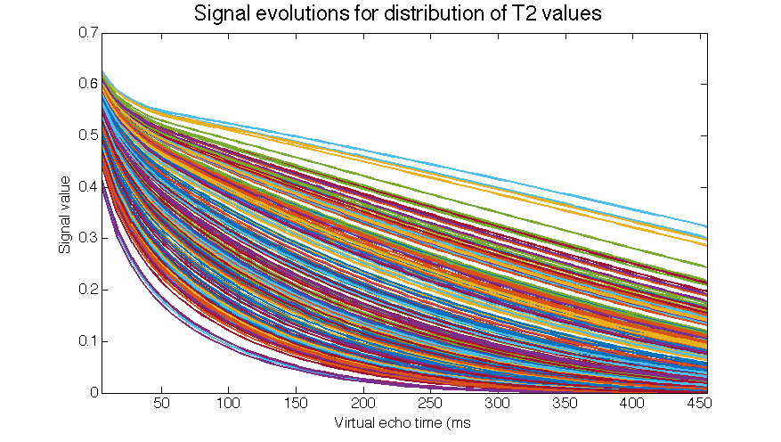

Contents
addpath src/utils
Load flip angles and T2 values
angles = dlmread('data/flipangles.txt');
myT2vals = load('data/T2vals', 'T2vals');
myT2vals = myT2vals.T2vals;
myT1vals = [1000]*1e-3;
figure(1);
hist(myT2vals * 1000, 100);
xlabel('T2 value (ms)');
ftitle('Distribution of T2 values', 24);
faxis;

Simulate and generate basis
T = 80;
e2s = 2;
TE = 5.688e-3;
K = 4;
N = 256;
verbose = false;
[U, X, T2vals, T1vals, TE, e2s] = gen_FSEbasis(N, angles, T, e2s, TE, myT1vals, myT2vals, verbose);
Phi = U(:,1:K);
figure(2);
plot((1:T)*TE*1000, X, 'linewidth', 2);
xlim([TE*1000, TE*1000*T]);
xlabel('Virtual echo time (ms)');
ylabel('Signal value');
ftitle('Signal evolutions for distribution of T2 values', 24)
faxis;
figure(3);
plot(Phi, 'linewidth', 3);
ftitle('Subspace curves', 24)
faxis;


Project the signal evolutions onto the subspace
figure(4);
Z = Phi*Phi'*X;
plot((1:T)*TE*1000, Z, 'linewidth', 2);
xlim([TE*1000, TE*1000*T]);
xlabel('Virtual echo time (ms)');
ylabel('Signal value');
ftitle('Projected signal evolutions', 24)
faxis;
err = norm(X(:) - Z(:)) / norm(X(:));
fprintf('Relative norm of error: %.6f\n', err);
Relative norm of error: 0.000378